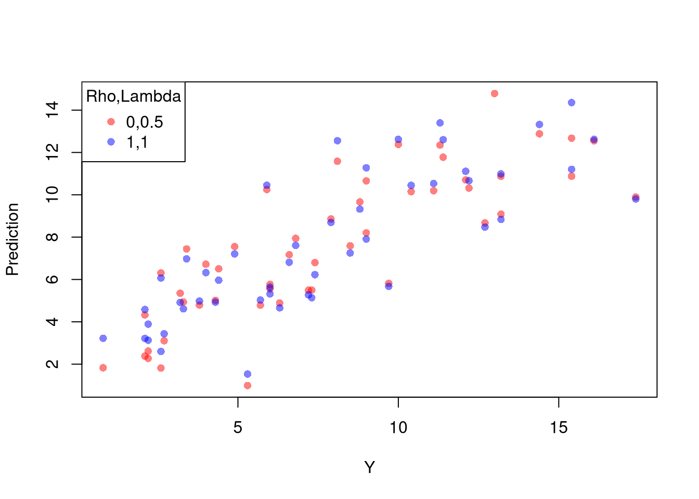

7 OLS Diagnostics
Simply plotting your regression object can help diagnose whether your model is a good one. There’s little sense in getting great standard errors for the wrong model, and is a simple and easy step. So do it early and often.
reg <- lm(Rape~Murder+Assault+UrbanPop, data=USArrests)
par(mfrow=c(2,2))
plot(reg)
7.1 Assessing Outlier \(Y\)
This is the first plot.
``In our \(y_i = a + b x_i + e_i\) regression, the residuals are, of course, \(e_i\) – they reveal how much our fitted value \(\hat{y}_i = a + b x_i\) differs from the observed \(y_i\). A point \((x_i ,y_i)\) with a corresponding large residual is called an outlier. Say that you are interested in outliers because you somehow think that such points will exert undue influence on your estimates. Your feelings are generally right, but there are exceptions. A point might have a huge residual and yet not affect the estimated \(b\) at all’’ Stata Press (2015) Base Reference Manual, Release 14, p. 2138.
plot(fitted(reg), resid(reg),col = "grey", pch = 20,
xlab = "Fitted", ylab = "Residual",
main = "Fitted versus Residuals")
abline(h = 0, col = "darkorange", lwd = 2)
# car::outlierTest(reg)7.2 Assessing Normality
The second plot examines whether the residuals are normally distributed. OLS point estimates do not depend on the Normality of the residuals. Good thing, because there’s no reason the residuals of economic phenomena should be so well behaved. The variability of the point estimates are, however, affected by the distribution of the residuals. For these reasons, you may be interested in assessing normality
par(mfrow=c(1,2))
hist(resid(reg), main='Histogram of Residuals')
qqnorm(resid(reg), main = "Normal Q-Q Plot of Residuals", col = "darkgrey")
qqline(resid(reg), col = "dodgerblue", lwd = 2)
shapiro.test(resid(reg))##
## Shapiro-Wilk normality test
##
## data: resid(reg)
## W = 0.94794, p-value = 0.02809# car::qqPlot(reg)Assessing Heterskedasticity may also matters for variance estimates. This is not shown in the plot, but you can run a simple test
library(lmtest)## Loading required package: zoo##
## Attaching package: 'zoo'## The following objects are masked from 'package:base':
##
## as.Date, as.Date.numericlmtest::bptest(reg)##
## studentized Breusch-Pagan test
##
## data: reg
## BP = 8.9049, df = 3, p-value = 0.030587.3 Assessing Outlier \(X\)
The third plot examines “Leverage”.
“\((x_i ,y_i)\) can be an outlier in another way – just as \(y_i\) can be far from \(\hat{y}_i\), \(x_i\) can be far from the center of mass of the other \(x\)’s. Such an `outlier’ should interest you just as much as the more traditional outliers. Picture a scatterplot of \(y\) against \(x\) with thousands of points in some sort of mass at the lower left of the graph and one point at the upper right of the graph. Now run a regression line through the points—the regression line will come close to the point at the upper right of the graph and may in fact, go through it. That is, this isolated point will not appear as an outlier as measured by residuals because its residual will be small. Yet this point might have a dramatic effect on our resulting estimates in the sense that, were you to delete the point, the estimates would change markedly. Such a point is said to have high leverage’’ Stata Press (2015) Base Reference Manual, Release 14, pp. 2138-39.
N <- 40
x <- c(25, runif(N-1,3,8))
e <- rnorm(N,0,0.4)
y <- 3 + 0.6*sqrt(x) + e
plot(y~x, pch=16, col=grey(.5,.5))
points(x[1],y[1], pch=16, col=rgb(1,0,0,.5))
abline(lm(y~x), col=2, lty=2)
abline(lm(y[-1]~x[-1]))
See https://www.r-bloggers.com/2016/06/leverage-and-influence-in-a-nutshell/ for a good interactive explaination.
Leverage Vector: Distance within explanatory variables \[ H = diag(\hat{P}) = [h_{1}, h_{2}, ...., h_{N}] \] \(h_i\) is the leverage of residual \(\hat{\epsilon_i}\)
Studentized residuals \[ r_i=\frac{\hat{\epsilon}_i}{s_{[i]}\sqrt{1-h_i}} \] and \(s_{(i)}\) the root mean squared error of a regression with the \(i\)th observation removed.
which.max(hatvalues(reg))## Georgia
## 10which.max(rstandard(reg))## Alaska
## 2The fourth plot further assesses outlier \(X\) using “Cook’s Distance”. Cook’s Distance is defined as the sum of all the changes in the regression model when observation i is removed from. \[ D_{i} = \frac{\sum_{j} \left( \hat{y_j} - \hat{y_j}_{[i]} \right)^2 }{ p s^2 } = \frac{[e_{i}]^2}{p s^2 } \frac{h_i}{(1-h_i)^2}\\ s^2 = \frac{\sum_{i} (e_{i})^2 }{n-K} \]
which.max(cooks.distance(reg))## Alaska
## 2car::influencePlot(reg)
## StudRes Hat CookD
## Alaska 3.78570999 0.11602814 0.3646123432
## Georgia -0.06679825 0.21493470 0.0003121571
## Nevada 2.62517777 0.06145855 0.1000109235
## North Carolina -2.01817190 0.21194394 0.2567055530There are many other diagnostics (which can often be written in terms of Cooks Distance or Vice Versa)
# Sall, J. (1990) Leverage plots for general linear hypotheses. American Statistician *44*, 308-315.
# car::leveragePlots(reg)(Welsch and Kuh. 1977; Belsley, Kuh, and Welsch. 1980) attempt to summarize the information in the leverage versus residual-squared plot into one DFITS statistic where \(DFITS > 2\sqrt{{k}/{n}}\) should be examined. \[ \text{DFITS}_i=r_i\sqrt{\frac{h_i}{1-h_i}}\\ \]
See also “dfbetas” and “covratio”
#dfbetas(reg)
#dffits(reg)
#covratio(reg)
#hatvalues(reg)
head(influence.measures(reg)$infmat)## dfb.1_ dfb.Mrdr dfb.Assl dfb.UrbP dffit
## Alabama -0.025686940 -0.08053898 0.014676264 0.047669803 -0.157239638
## Alaska 0.758304736 -0.59617559 0.976957649 -1.008931529 1.371544155
## Arizona -0.011470229 -0.04034123 0.049624809 0.004523264 0.059142496
## Arkansas -0.005860294 0.00105735 -0.002420583 0.006056285 -0.007978192
## California -0.295223556 -0.19702231 0.266630954 0.267792657 0.516921957
## Colorado -0.169794005 -0.09705845 0.111735442 0.212324868 0.420983022
## cov.r cook.d hat
## Alabama 1.1216797 6.264122e-03 0.05959345
## Alaska 0.4087414 3.646123e-01 0.11602814
## Arizona 1.2618576 8.934514e-04 0.13639303
## Arkansas 1.1493186 1.626607e-05 0.05006430
## California 1.0287684 6.527294e-02 0.11395594
## Colorado 0.7744530 4.116548e-02 0.037809757.4 Collinearity
This is when one explanatory variable in a multiple regression model can be linearly predicted from the others with a substantial degree of accuracy. Coefficient estimates may change erratically in response to small changes in the model or the data. (In the extreme case where there are more variables than observations \(K>\geq N\), \(X'X\) has an infinite number of solutions and is not invertible.)
To diagnose this, we can use the Variance Inflation Factor \[ VIF_{k}=\frac{1}{1-R^2_k}, \] where \(R^2_k\) is the \(R^2\) for the regression of \(X_k\) on the other covariates \(X_{-k}\) (a regression that does not involve the response variable Y)
car::vif(reg) ## Murder Assault UrbanPop
## 2.971023 3.169012 1.136837sqrt(car::vif(reg)) > 2 # problem?## Murder Assault UrbanPop
## FALSE FALSE FALSE7.5 Transformations
Coefficient transformations can often improve model fit. Note for small changes, \(\Delta ln(x) \approx \Delta x / x = \Delta x \% \cdot 100\). Under the assumptions of the OLS model, we have
| Model | Regressand | Regressor | Derivative | Interpretation |
|---|---|---|---|---|
| linear–linear | \(y\) | \(x\) | \(\Delta y = \beta_1\cdot\Delta x\) | Change \(x\) by one unit \(\rightarrow\) change \(y\) by \(\beta_1\) units. |
| log–linear | \(ln(y)\) | \(x\) | \(\Delta y \% \cdot 100 \approx \beta_1 \cdot \Delta x\) | Change \(x\) by one unit \(\rightarrow\) change \(y\) by \(100 \cdot \beta_1\) percent. |
| linear–log | \(y\) | \(ln(x)\) | \(\Delta y \approx \frac{\beta_1}{100}\cdot \Delta x \%\) | Change \(x\) by one percent \(\rightarrow\) change \(y\) by \(\frac{\beta_1}{100}\) units |
| log–log | \(ln(y)\) | \(ln(x)\) | \(\Delta y \% \approx \beta_1\cdot \Delta x \%\) | Change \(x\) by one percent \(\rightarrow\) change \(y\) by \(\beta_1\) percent |
There are many reasons why the OLS model is unlikely to be true. Recall from micro theory, that an additively seperable and linear production function is referred to as ``perfect substitutes’’. You have implicitly modelled the different regressors \(X\) as perfect substitutes, when in fact they may be compliments.
Further recall that the ‘’perfect substitutes’’ model is a special case of the constant elasticity of substitution production function. Here, we will build on http://dx.doi.org/10.2139/ssrn.3917397, and consider box-cox transforming both \(X\) and \(y\). Specifically, apply the box-cox transform of \(y\) using parameter \(\lambda\) and apply another box-cox transform to each \(x\) using the same parameter \(\rho\);so that
\[ y^{(\lambda)}_{i} = \sum_{k}\beta_{k} x^{(\rho)}_{k,i} + \epsilon_{i}\\ y^{(\lambda)}_{i} = \begin{cases} \lambda^{-1}[ (y_i+1)^{\lambda}- 1] & \lambda \neq 0 \\ log(y_i+1) & \lambda=0 \end{cases}.\\ x^{(\rho)}_{i} = \begin{cases} \rho^{-1}[ (x_i)^{\rho}- 1] & \rho \neq 0 \\ log(x_{i}+1) & \rho=0 \end{cases}. \]
Notice that this nests:
- linear-linear \((\rho=\lambda=1)\).
- linear-log \((\rho=1, \lambda=0)\).
- log-linear \((\rho=0, \lambda=1)\).
- log-log \((\rho=\lambda=0)\).
If \(\rho=\lambda\), we get the CES production function. This nests the ‘’perfect substitutes’’ linear-linear model (\(\rho=\lambda=1\)) , the ‘’cobb-douglas’’ log-log model (\(\rho=\lambda=0\)), and many others. We can define \(\lambda=\rho/\lambda'\) to be clear that this is indeed a CES-type transformation where
- \(\rho \in (-\infty,1]\) controls the ‘’substitutability’’ of explanatory variables (\(\rho <0\) is ‘’complementary’’)
- \(\lambda\) determines ‘’returns to scale’’ (\(\lambda'<1\) is ‘’decreasing returns’’).
We compute the mean squared error in the original scale by inverting the predictions; \[ \widehat{y}_{i} = \begin{cases} [ \widehat{y^{(\lambda)}}_{i} \cdot \lambda ]^{1/\lambda} -1 & \lambda \neq 0 \\ exp( \widehat{y^{(\lambda)}}_{i}) -1 & \lambda=0 \end{cases}. \]
It is easiest to optimize parameters in a 2-step procedure called `concentrated optimization’. We first solve for \(\widehat{\beta}(\rho,\lambda)\) and compute the mean squared error \(MSE(\rho,\lambda)\). We then find the \((\rho,\lambda)\) which minimizes \(MSE\).
## Box-Cox Transformation Function
bxcx <- function( xy, rho){
if (rho == 0L) {
log(xy+1)
} else if(rho == 1L){
xy
} else {
((xy+1)^rho - 1)/rho
}
}
bxcx_inv <- function( xy, rho){
if (rho == 0L) {
exp(xy) - 1
} else if(rho == 1L){
xy
} else {
(xy * rho + 1)^(1/rho) - 1
}
}
## Which Variables
reg <- lm(Rape~Murder+Assault+UrbanPop, data=USArrests)
X <- USArrests[,c('Murder','Assault','UrbanPop')]
Y <- USArrests[,'Rape']
## Simple Grid Search
## Which potential (Rho,Lambda)
rl_df <- expand.grid(rho=seq(-2,2,by=.5),lambda=seq(-2,2,by=.5))
## Compute Mean Squared Error
## from OLS on Transformed Data
errors <- apply(rl_df,1,function(rl){
Xr <- bxcx(X,rl[[1]])
Yr <- bxcx(Y,rl[[2]])
Datr <- cbind(Rape=Yr,Xr)
Regr <- lm(Rape~Murder+Assault+UrbanPop, data=Datr)
Predr <- bxcx_inv(predict(Regr),rl[[2]])
Resr <- (Y - Predr)
return(Resr)
})
rl_df$mse <- colMeans(errors^2)
## Want Small MSE and Interpretable
## (-1,0,1,2 are Easy to interpretable)
library(ggplot2)
ggplot(rl_df, aes(rho, lambda, fill=mse )) +
geom_tile() + ggtitle('Mean Squared Error') 
## Which min
rl0 <- rl_df[which.min(rl_df$mse),c('rho','lambda')]
## Which give NA?
## which(is.na(errors), arr.ind=T)
## Plot
Xr <- bxcx(X,rl0[[1]])
Yr <- bxcx(Y,rl0[[2]])
Datr <- cbind(Rape=Yr,Xr)
Regr <- lm(Rape~Murder+Assault+UrbanPop, data=Datr)
Predr <- bxcx_inv(predict(Regr),rl0[[2]])
cols <- c(rgb(1,0,0,.5), col=rgb(0,0,1,.5))
plot(Y, Predr, pch=16, col=cols[1], ylab='Prediction')
points(Y, predict(reg), pch=16, col=cols[2])
legend('topleft', pch=c(16), col=cols, title='Rho,Lambda',
legend=c( paste0(rl0, collapse=','),'1,1') )
Note that your hypothesis testing procedures do not account for you trying out different transformations.
7.6 More Literature
- https://book.stat420.org/model-diagnostics.html#leverage
- https://socialsciences.mcmaster.ca/jfox/Books/RegressionDiagnostics/index.html
- https://bookdown.org/ripberjt/labbook/diagnosing-and-addressing-problems-in-linear-regression.html
- Belsley, D. A., Kuh, E., and Welsch, R. E. (1980). Regression Diagnostics: Identifying influential data and sources of collinearity. Wiley. https://doi.org/10.1002/0471725153
- Fox, J. D. (2020). Regression diagnostics: An introduction (2nd ed.). SAGE. https://dx.doi.org/10.4135/9781071878651